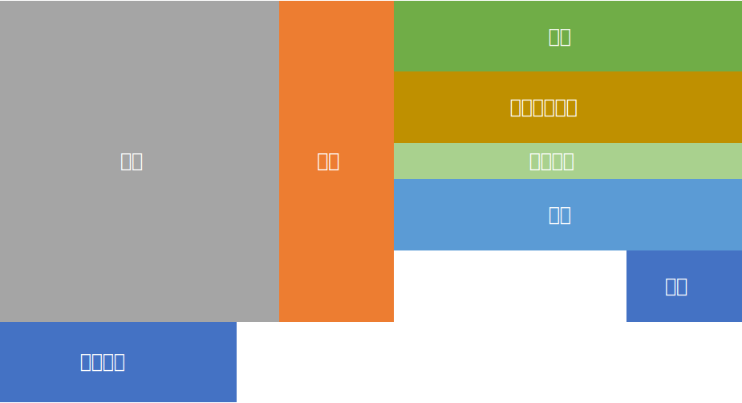

農業の形成条件
作物や家畜には、それぞれ適した生育環境が必要である。⇒自然的条件
また、宗教、市場経済などによって、作られる作物の種類は影響を受ける。⇒社会的・文化的条件
言葉の確認
-
- 土地生産性
- 土地の単位面積当たりの生産量
-
- 労働生産性
- 労働者1人当たりの生産量
-
- 集約的農業
-
化学肥料、機械を大量に集中的に投入されている農業。
欧州、アジアなど。
-
- 粗放的農業
- 機械、農薬を多用しない農業。
-
- 二期作
- 同じ水田で1年に稲を2回栽培すること。
- 高温で降雨に恵まれたところで行われる。
-
- 二毛作
- 同じ耕地で夏と冬に別の作物を栽培すること。
- 温帯地域で行われる。
-
- 緑の革命
- 東南アジア、南アジアで1960年代ごろに高収量品種開発や、化学肥料の投入などによって生産性が向上し、稲の収穫量が増大したこと。
- 一方環境問題の原因にもなっていたりする。
商業的、企業的な農業
世界市場向けに作物を生産。
地中海式農業
主に、オリーブ, ぶどう, コルクがしなどの樹木栽培。
家畜(羊, 山羊など)も飼育されている。
降水のある冬季には小麦が生産されている。
地中海沿岸地域, 米カルフォルニア州, 地理中部, オーストラリア南西部, 南アフリカ南西部などのCs/地中海性気候地域で見られる。
地力回復のための休閑を交互に繰り返す、二圃式農業から発展。
混合農業
家畜(肉牛, 豚, 羊, 鶏など)を生産。
地力回復が遅い、ヨーロッパ中部(独, 仏など)でみられる。
耕地を冬作物, 夏作物, 休閑地に分けて3年周期で耕作する、三圃式農業から発展。
米中西部のとうもろこし地帯(コーンベルト)などでは機械化が進んでいる。
近年は経営規模拡大により、飼料作物の栽培と肉用家畜の飼育が別々に行われるようになりつつある。(農業の専門分化)
酪農
飼料作物や牧草を栽培して乳牛を飼育し、牛乳, バター, チーズ等の酪製品を生産する。
生乳を扱うので、長距離輸送が不向きだったため、大都市周辺で行われていた。(現在は殺菌技術向上などで広域化)
主に、寒冷地、乾燥地域、水はけが悪く農業に適さない地域などで行われている。(牛は牧草で育つので)
混合農業から発達。
アルプスの山岳地域では、時期によって山を上り下りする移牧が行われる。
e.g.) 夏は涼しい高地へ、冬は温暖な低地へ。
園芸農業
果物、野菜、花卉。
都市へ出荷するため、大都市周辺で近郊農業として発展してきた。
近年は移動手段の発達により、都市から離れたところで行われる露地栽培(都市から遠いところで生産し、生産物を輸送機関ではるばる運ぶ)も行われるように。
プランテーション農業
世界市場向けの商品作物を大量生産する企業的農業。
熱帯やその周辺地域の気候の特色をいたして商品を生産している。
e.g.) コーヒー, カカオ, バナナ, 茶
もともとは列強諸国が植民地支配した国の現地住民を労働力にし、広大な農場(プランテーション)を使って行った農業である。
企業的穀物農業
穀物を生産する農業。
アメリカ&カナダのプレーリー分布する黒土地帯, オーストラリア南東部半乾燥地域などで見られる。
年降水量が500mm/年くらいのところで生産されていることが多い
- 冬小麦
- 種を秋に収穫。
- 春小麦
- 種を春に収穫。
- より寒く[寒く/暑く]地域で、生産される。
広大な耕地で大型の耕作機械を使って、穀物、大豆などを大規模に生産する。
土地生産性は低い[高い/低い]。
労働生産性は高い[高い/低い]。
企業的牧畜業
牧畜する農業。
アメリカの西経100°, オーストラリア半乾燥地域, ニュージーランド, 南アフリカなどに広がる。
年降水量が250mm/年～500mm/年の地域で生産されていることが多い
自給的な農業
世界市場向けではなく、各国で消費する用の作物の生産。
遊牧
広大な草原の草を用いて、羊、牛、ヤギ、ラクダなどを飼育する。
水と気温が足りないから、牧草を育てることはできないから遊牧。
モンゴルなどの、乾燥アジアから北アフリカに広がるBS気候という移動式家屋を用いてラクダ, ウマ, 羊を育てる。
カナダなどの北極海沿岸に広がる、ET気候と呼ばれる移動式家屋を用いて、トナカイ, リャマ, アルパカを育てる。
オアシス農業
BW気候地域の中で、例外的に水の得られるオアシス周辺で行う農業。
小麦, 綿花, ナツメヤシなどを育てる。
cf. 地下用水路 ⇒ カナート(イラン), カレーズ(アフガニスタン), フォガラ(北アフリカ)
移動式焼畑農業
アフリカ中南部, ラテンアメリカの熱帯地域、東アジアなどの主にAf気候の地域で行われる。
キャッサバ, タロイモ, ヤムイモ, バナナ
アジアの伝統的農業
東、東南、南アジアで広がる。
cf. 緑の革命
経営面積が小さく、人口密度が高い、すなわち労働生産性が低い。
降水量が1000mm/年
アメリカ農業
アメリカの農業は東側と西側で大きく違う。 西経100°)の線を境に西は降水が少なく、東は降水が多い。
発達の歴史
|
17C 18C |
東海岸で、自給的農業 |
| 19C | ミシシッピ川流域まで開拓 |
|
ホームステッド法 ⇒ フロンティア(開拓前線)拡大 |
|
| 大陸横断鉄道(1869) | -|
| 西部でゴールドラッシュ | |
| ヨーロッパ産業革命 ⇒ 人口増加 ⇒ 商業的農業 | |
| 20C | 全世界の食料供給地に |
酪農地域
別名: デイリーベルト
ニューイングランド
冷涼湿潤な気候であり、氷食地形(非肥沃)である。 大消費地に隣接している。
春小麦地域
ノースダコタ州, サウスダコタ州など。
文字通り春小麦を生産する。
トウモロコシ・大豆地域
別名: コーンベルト
プレーリー中部
牛や豚たちのための穀物を育てる。
冬小麦地帯
カンザス州, ネブラスカ州, オクラホマ州など。
土壌がプレーリー土で超肥沃。
園芸農業 / 大西洋岸果物野菜地域
地下水などを利用して、果物野菜花卉を生産する。
北部: 集約的近郊農業 (都市の近くで行う農業)
南部: 輸送園芸/トラックファーミング (輸送機関を利用して都心へはるばると)
綿花地域
別名: コットンベルト
南部の平原に広がる。霜が降りにくく、年降水量が500mm/年以上のところで栽培。
地中海式農業地域
主にカルフォルニア州。(Cs気候)
灌漑が整備されている。
放牧と灌漑農業
主にグレートプレーンズにかけて広がる地域。
年降水量が500mm/年以下である。
センターピボット方式とフィードロット。